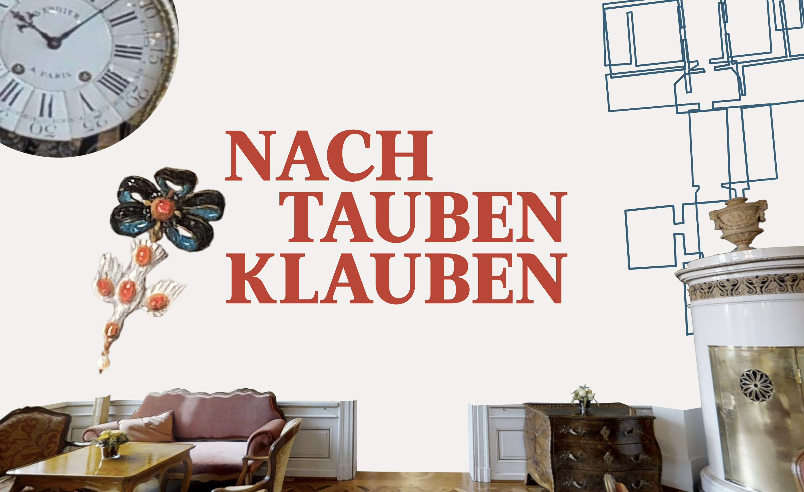
Titled something like 'Pawing/Clutching for Doves', this project takes a few different looks at the Beatrice von Wattenwyl-Haus in Bern. Who moves around in its rooms, which unnoticed stories hide in the deliberately staged pathos of the location and how objects and their details can help us gain access to all of the above are some core questions raised. I myself zoomed in on a two dove pendants and found about a dozen more, researching (artistically), guided by art mediation and art history.
see for yourself
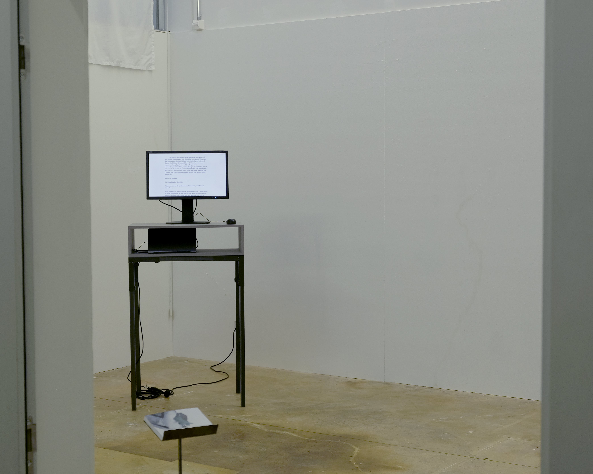
This hyper text work unites a collection of texts and a few images. Working with subtle resistances and friction in the digital medium, as well as playing on curiosity and the demand for a completed picture, this work examines our subjective and societal frames of reference, sourcing from my own.
see for yourself
Florian Dombois and Priska Gisler
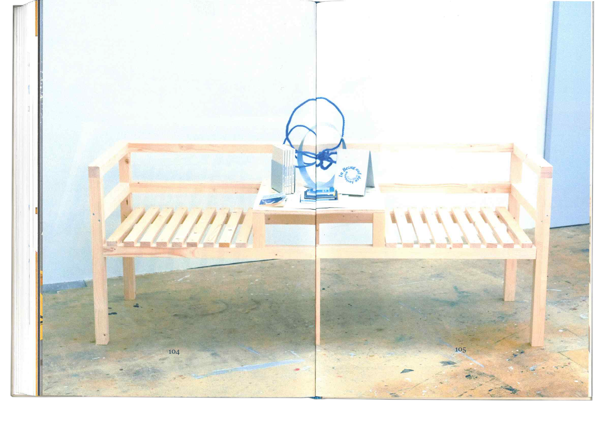
In my bachelor’s thesis, the title meaning something along the lines of 'concerning exchange', the theoretical portion was concerned with the concept of self referentiality. This, combined with an artistic case study, was then presented on a bench, inspired by the hybrid use of similar benches in the daily trade of milk and as social hubs in rural Swiss villages up until about half a century ago.
→ download thesis
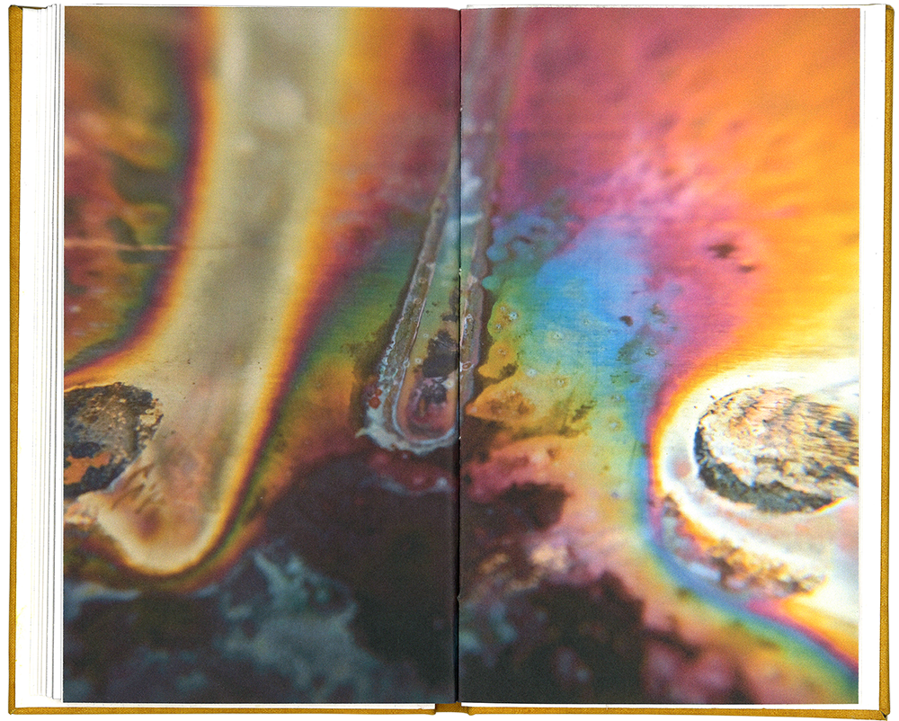
Poetic synopses of cultural-historical texts about different uses for urine in early-modern art, as well as an material study employing copper, wood and urine served as the basis for this book.
→ Download Buch
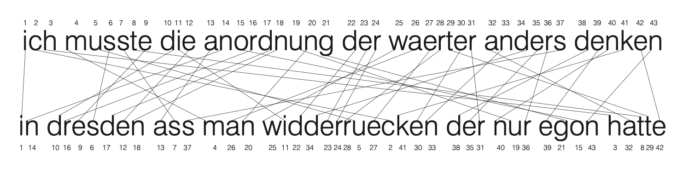
Anagrammomatics is a method of analysis, which works with the scientific-aesthetical evaluation of anagrams to examine text fragments.
→ download papers
I wasn't sure who Fiona was, so I asked some people, whether they were Fiona... After some drawing and quite some folding I still don't know.

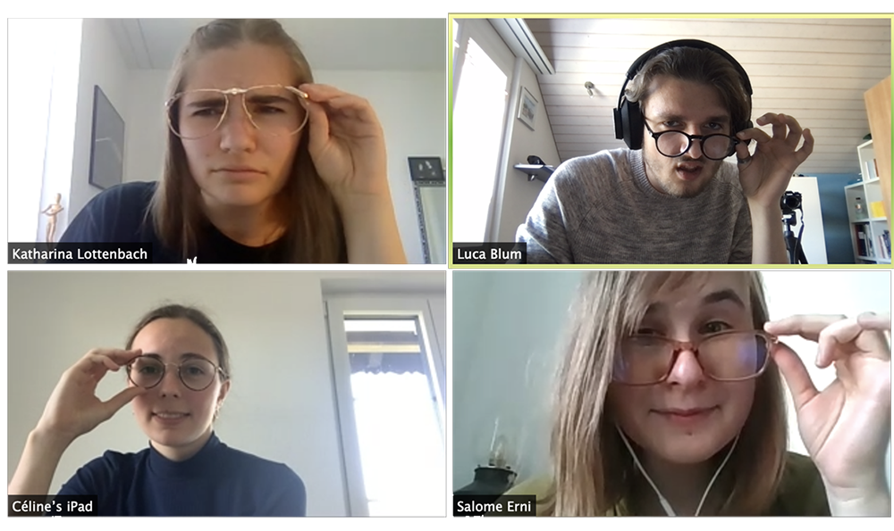
At the Foundation Course for Art and Design Salome Erni, Katharina Lottenbach, Céline Schmid, and myself founded the Büro BESL which concerned itself with the contrast of nature and technology, brought together in the publiction ‹Insights and Outsides›.
→ download publication
Miscellaneous
Collective Endeavours:
Workshops: Website (2021, 2026), Photoshop (2022), Silk Screen (2024) all for the Talent Class Visual Art at Kantonsschule Schüpfheim; book binding (2025).
Making:
Book-binding: agenda
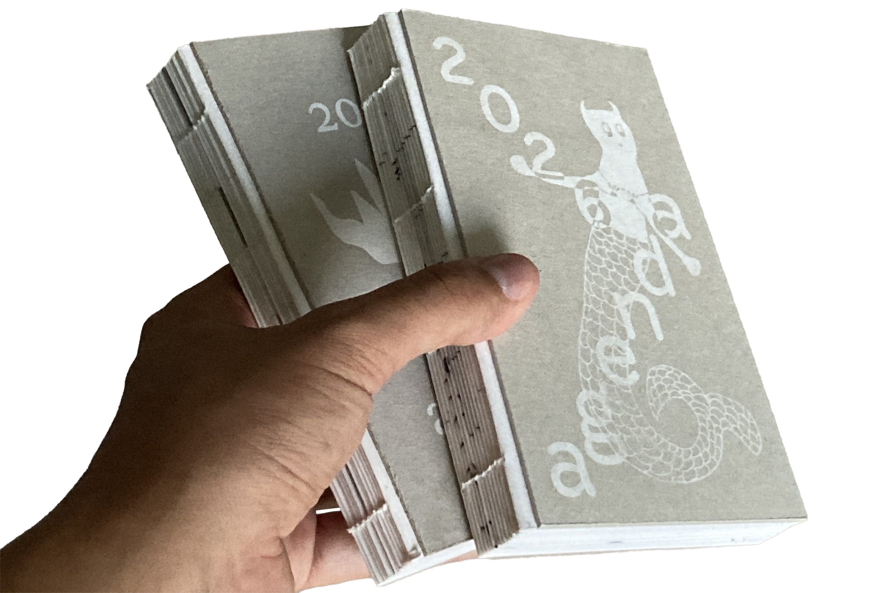
as Viki21 (with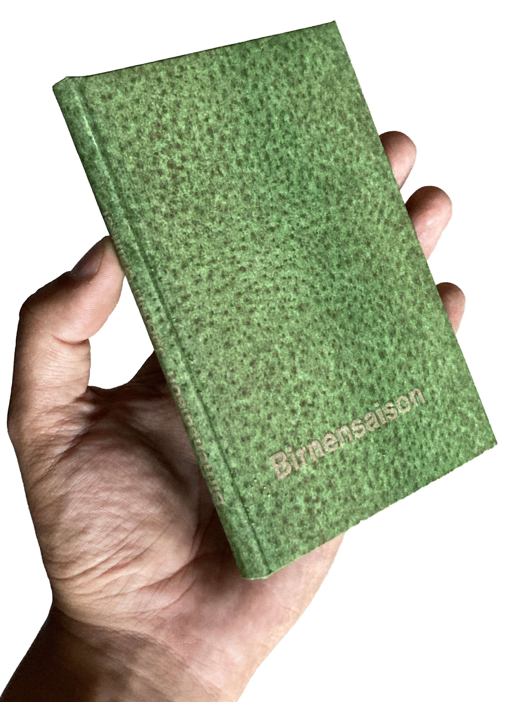
, Jasmin Galliker, 2025;div. BA- and MA-thesis HKB & HSLU 2024-2026
Cutting plotting:
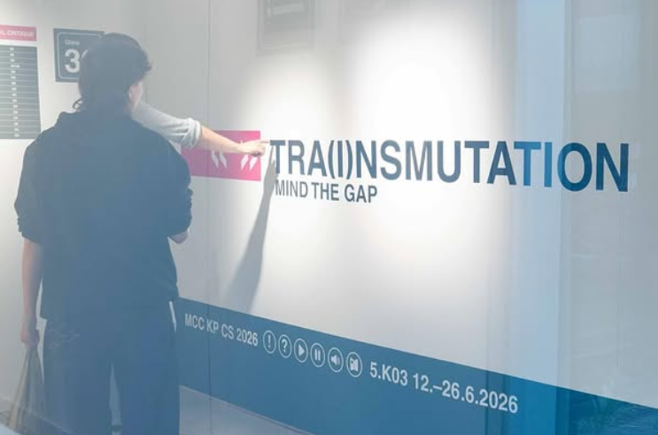
, Master Cultural Critique and Curatorial Studies ZhdK, 2026;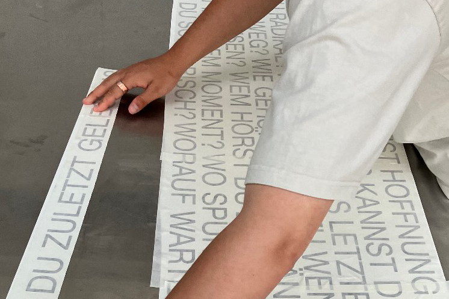
, Wartsaal, 2026Acrylic glass-positives for
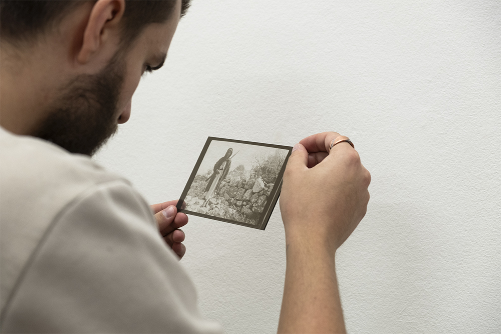
, 2025Book design
Website
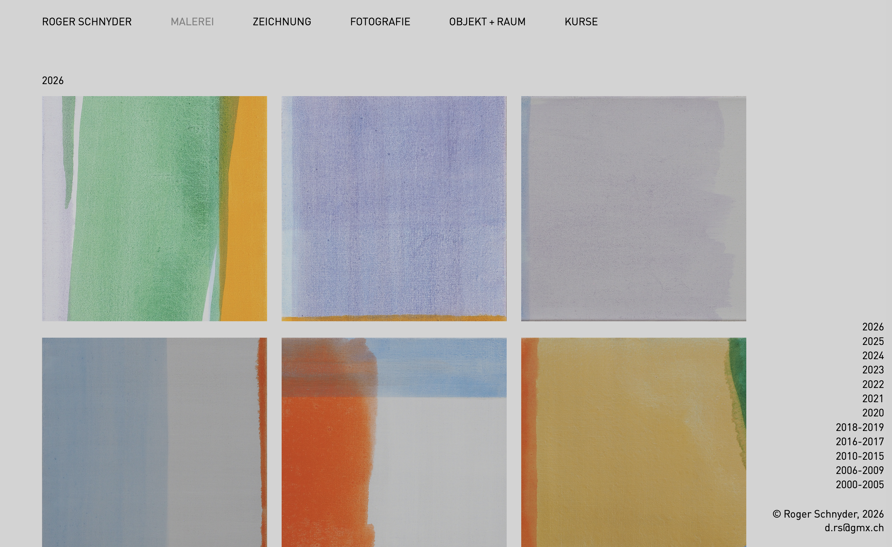
for Roger Schnyder, 2023